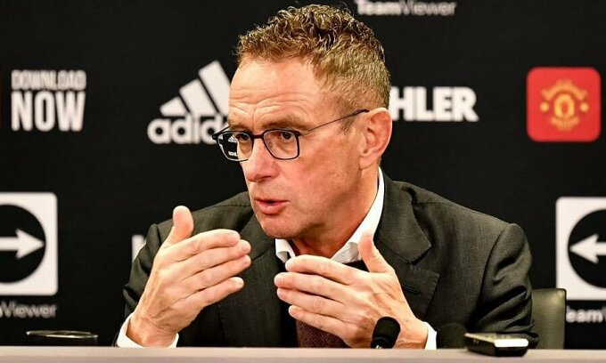
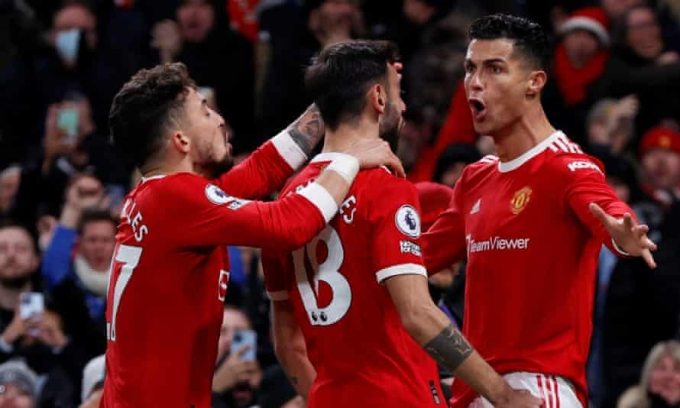

Rangnick: 'Cầu thủ Man Utd cần tin tưởng tôi'
Trong họp báo ra mắt Man Utd hôm 3/12, HLV Ralf Rangnick nói rằng mọi cầu thủ phải thi đấu vì tập thể, dù là Cristiano Ronaldo hay ai khác. - Vì sao ông từ chối Chelsea nhưng lại chọn Man Utd? - Khi sa thải Frank Lampard, Chelsea liên hệ với tôi nhưng họ chỉ nói về hợp đồng bốn tháng, chứ không nói về tương lai dài hơn. Còn Man Utd đưa ra đề nghị để tôi làm cố vấn trong hai năm, sau khi hết hợp đồng sáu tháng rưỡi. Khi được một CLB như Man Utd liên hệ, tôi không thể từ chối.
- Ông đánh giá thế nào về trận thắng Arsenal tối 2/12? - Dĩ nhiên tôi đã xem mọi trận đấu gần đây của Man Utd, ngay cả trước khi được CLB liên hệ. Tôi nhận thức khá rõ những gì đang xảy ra với đội bóng ở Ngoại hạng Anh. Rõ ràng Man Utd có rất nhiều cầu thủ tài năng. Mục tiêu của tôi là đem lại sự cân bằng hơn cho đội bóng. Hôm qua chúng tôi đã thủng lưới hai bàn, nên cần ghi tới ba bàn mới thắng. Chúng tôi thủng lưới quá nhiều, nên cách tiếp cận của tôi là giúp đội cân bằng hơn. Trận đấu với Arsenal rất thú vị với người hâm mộ. Nhưng với tư cách HLV, tôi không muốn những màn trình diễn như thế xuất hiện mỗi tuần. Tôi sẽ cố gắng giúp đỡ những cầu thủ tài năng xuất chúng này. Hiệp một đội chơi khá tệ. Bàn thua sớm có phần thiếu may mắn. Trọng tài đã không quan sát thấy David de Gea ở đâu trong khung thành. Ngay cả tôi cũng nghĩ: "David đâu rồi?". VAR đã công nhận bàn cho Arsenal và điều đó khiến cầu thủ Man Utd thiếu tự tin. Nhưng quan trọng là đội đã gỡ hoà trước khi hiệp một kết thúc. - Đây có phải thử thách khó khăn nhất sự nghiệp của ông? - Đây là đội bóng lớn nhất, với thử thách khổng lồ. Tôi đã làm việc cùng những ngôi sao hàng đầu khác, tương tự như khi dẫn Schalke 04. Tôi còn hạnh phúc hơn khi được làm việc cùng nhóm cầu thủ Man Utd lúc này. - Mục tiêu của ông là gì? - Đầu tiên là chiến thắng. Tôi sẽ giới thiệu về bản thân với các cầu thủ trong buổi tập 15h chiều nay (22h giờ Hà Nội). Tôi sẽ cho họ biết phương pháp tiếp cận trận đấu ra sao. Tôi có đủ kinh nghiệm để hiểu rằng không thể thay đổi mọi thứ ở đội bóng vào giữa mùa giải. Tôi rất tham vọng, muốn thắng các trận đấu. Chúng tôi muốn tạo ra mùa giải thành công nhất có thể, nhưng vẫn phải thực tế. Vẫn còn koảng cách giữa chúng tôi với ba CLB hàng đầu Ngoại hạng Anh. Nhưng tôi có thể nhận ra tiềm năng của đội bóng này. Ban lãnh đội và tôi có chung quan điểm, vì thế công tác quản lý sẽ không có nhiều thay đổi. Đội hình hiện tại đủ sức chiến đấu ở cấp độ cao nhất. Ba đội hàng đầu đang rất ổn định, với HLV tài ba. Chúng tôi phải phấn đấu hơn nữa. Khi Jurgen Klopp đến Liverpool, đội hình mà ông ấy kế thừa không mạnh hơn những gì tôi đang có ở Man Utd. - Liệu ông có nhận công việc dài hạn ở Man Utd không? - Hiện tại tôi là HLV tạm quyền. Và tôi biết đội bóng sẽ tìm kiếm một HLV mới. Nếu mọi thứ diễn ra tốt đẹp, như khi còn làm việc ở Leipzig, tôi có thể gợi ý đội bóng tiếp tục làm việc cùng tôi thêm một năm. - Ông sẽ áp dụng triết lý của mình quyết liệt đến mức nào? - Tôi nghĩ để giành quyền kiểm soát thế trận, chúng tôi phải chơi chủ động. Tôi muốn toàn đội chơi gắn bó và có tinh thần tập thể. Hôm qua, màn trình diễn của Man Utd trong hai hiệp đối lập nhau. Nhờ sự trợ giúp từ người hâm mộ, Man Utd đã chơi tốt hơn trong hiệp hai. Không dễ để tôi thay đổi trong một hoặc hai buổi tập, một hay hai tuần. Nhưng mục tiêu chính của tôi là kiểm soát bóng. - Ông đã nói gì với Michael Carrick? - Tôi gặp Michael hai ngày trước, và nói chuyện riêng trong hơn một tiếng. Tôi đã cố gắng thuyết phục cậu ấy ở lại, nhưng không thể thay đổi quyết định đó. Tôi rất vui khi được làm việc với ban huấn luyện hiện tại, vì tôi cần kinh nghiệm của họ với các cầu thủ. Tôi sẽ tìm thêm ba hoặc bốn trợ lý trong vài tuần tới. Nhưng vì các quy định của Brexit, việc tuyển thêm người không dễ dàng. Hy vọng chúng tôi có thể đưa họ đến đây trong một, hai tuần tới. Lúc này tôi chưa thể tiết lộ bất cứ cái tên nào. - Ông có phải thích nghi với Cristiano Ronaldo không? - Một HLV luôn phải điều chỉnh phong cách huấn luyện của mình để phù hợp với các cầu thủ. Ronaldo là cầu thủ chuyên nghiệp hàng đầu. Tôi chưa thấy cầu thủ nào có thể lực tốt như cậu ấy, ở độ tuổi 36. Quan trọng là chúng tôi phải cải thiện toàn đội, không riêng Cristiano. Chúng tôi đang chơi ở giải đấu cạnh tranh nhất thế giới, và tất cả đồng đội của Ronaldo cũng phải thi đấu vì tập thể. - Ông có mua thêm cầu thủ trong tháng 1/2022 không? - Đây không phải lúc để nói về cầu thủ mới. Chúng tôi phải tìm hiểu cặn kẽ về đội hình hiện tại. Số lượng cầu thủ chắc chắn không quá ít. Sau Giáng sinh, chúng tôi sẽ có thời gian để nói về cầu thủ mới. Nhưng mùa đông không phải thời điểm tốt nhất để mua cầu thủ. - Man Utd có vấn đề về bản sắc không? - Chúng tôi chỉ có thể tiến bộ theo từng trận, từng bước. Bất cứ khi nào tôi đến một CLB vào giữa mùa giải, tôi phải đảm bảo rằng đội bóng có cơ hội lớn nhất để thắng trận tiếp theo. Các cầu thủ phải tin tưởng tôi và hiểu rằng cần phải chơi như thế nào trong tương lai. Pep Guardiola mất ba năm để đem thành công về cho Man City. Jurgen mất ba, bốn năm ở Liverpool. Họ đều đi trước chúng tôi một chút. Tôi rất hạnh phúc với chất lượng cầu thủ Man Utd hiện tại. Chúng tôi muốn thực hiện các bước tiếp theo. - Có phải ông luôn muốn làm việc ở Ngoại hạng Anh? - Như các bạn đã biết, tôi học tiếng Anh để trở thành giáo viên Anh ngữ và Thể dục vào cuối những năm 70, đầu những năm 80. Tôi sống ở Brighton, và yêu bóng đá Anh. Mỗi tuần, tôi đều bắt chuyến tàu nhanh từ Brighton đến London, ga Victoria, để xem các trận ở sân Highbury cũ và White Hart Lane. Tôi thấy rất thú vị khi được là một phần của bầu không khí đó. - Ông bực mình thế nào khi ngồi ở khán đài xem trận vừa qua? - Tôi rất háo hức chờ đến trận đấu. Khi ở trên khán đài, tôi thấy đồng cảm với Michael và Kieran McKenna. Tỷ số có thể là 4-2 hoặc 3-3. Một HLV không bao giờ muốn trận đấu diễn ra theo cách đó. Tôi thấy đồng cảm với các đồng nghiệp. Cuối cùng tôi cũng mừng vì đội đã thắng.
-

VTV Bình Điền Long An bị xuống hạng khi rút khỏi giải VĐQG 2021? VTV Bình Điền Long An rút khỏi vòng 2 giải bóng chuyền VĐQG 2021 khiến nhiều người hâm mộ đặt ra câu hỏi liệu đội bóng này có bị đánh xuống hạng.
-

Bóng rổ Hậu Giang quyết tâm giành huy chương vàng tại giải U23 Quốc gia Sau thời gian chờ đợi vì dịch covid-19, giải bóng rổ U23 3x3 quốc gia 2021 sẽ chính thức khởi tranh tại Nha Trang vào tuần sau.
-

Malaysia 'vỡ ra nhiều điều' sau những trận thua ĐT Việt Nam HLV Tan Cheng Hoe của ĐT Malaysia thừa nhận học hỏi được nhiều điều sau những thất bại trước ĐT Việt Nam trước thềm AFF Cup 2021.
-

Kỷ lục gia thế giới chạy 10km bị đâm chết tại nhà Agnes Jebet Tirop - VĐV Kenya vừa lập kỷ lục thế giới chạy 10km nữ - được phát hiện tử vong ở nhà với nhiều vết đâm ở bụng.
-

90% tay vợt chuyên nghiệp thu nhập không đủ sống Chỉ 150 tay vợt hàng đầu ATP không thua lỗ khi theo đuổi quần vợt, chiếm 6% trong các tay vợt nam chuyên nghiệp được xếp hạng.
-

Kết quả bóng bàn Vô địch thế giới: Fan Zhendong và Wang Manyu lần đầu lên đỉnh Tại giải bóng bàn Vô địch thế giới 2021 vừa kết thúc tại Houston, Mattias Falck / Kristian Karlsson như nhắc lại rằng Thụy Điển cũng là một cường quốc.
-

Trị giá của Quả bóng Vàng
Quả Bóng Vàng do tạp chí Pháp France Football trao tặng là danh hiệu cá nhân cao quý nhất giới cầu thủ, giá trị kinh tế khoảng 3.000 euro (3.400 USD). -

Hùng Dũng lỡ hẹn AFF Cup 2021: Kế hoạch của thầy Park phá sản? Hùng Dũng chính thức không thể lên đường sang Singapore để hội quân cùng các đồng đội và điều này khiến cho mọi tính toán của HLV Park Hang Seo về con số 0.
-

Cầu thủ Malaysia thừa nhận vẫn ám ảnh về 'cơn ác mộng' ĐT Việt Nam Đến thời điểm hiện tại, hậu vệ Shahrul Saad của Malaysia vẫn chưa thể quên trận thua trước ĐT Việt Nam cách đây 3 năm trên SVĐ Mỹ Đình.
-

Việt Nam vs Lào: Hơn 20 năm chưa thể ghi dù chỉ 1 bàn Nếu chỉ tính trong 8 lần đối đầu gần nhất (kể từ ngày 20/7/1999), ĐT Lào luôn thua rất đậm khi thủng lưới đến... 40 bàn và không ghi được bàn nào vào lưới ĐT Việt Nam.
-
Hùng Dũng lỡ hẹn AFF Cup 2021 Hùng Dũng chính thức không thể lên đường sang Singapore để hội quân cùng các đồng đội.
-

Djokovic thua bán kết Davis Cup Tay vợt số một thế giới Novak Djokovic thua trận đôi quyết định, dừng bước ở bán kết Davis Cup trước Croatia hôm 3/12.
-

HLV Park: 'Không khí ở đội hiện chưa tốt' HLV Park Hang-seo thừa nhận Việt Nam chịu nhiều áp lực trước thềm AFF Cup 2020.
-

Rangnick lần đầu chỉ đạo Man Utd cuối tuần này Tiếp Crystal Palace sẽ là thử thách đầu tiên với Ralf Rangnick trên cương vị HLV tạm quyền trong sáu tháng của Man Utd.
-

HRangnick: 'Cầu thủ Man Utd cần tin tưởng tôi' Trong họp báo ra mắt Man Utd hôm 3/12, HLV Ralf Rangnick nói rằng mọi cầu thủ phải thi đấu vì tập thể.